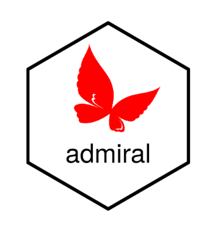
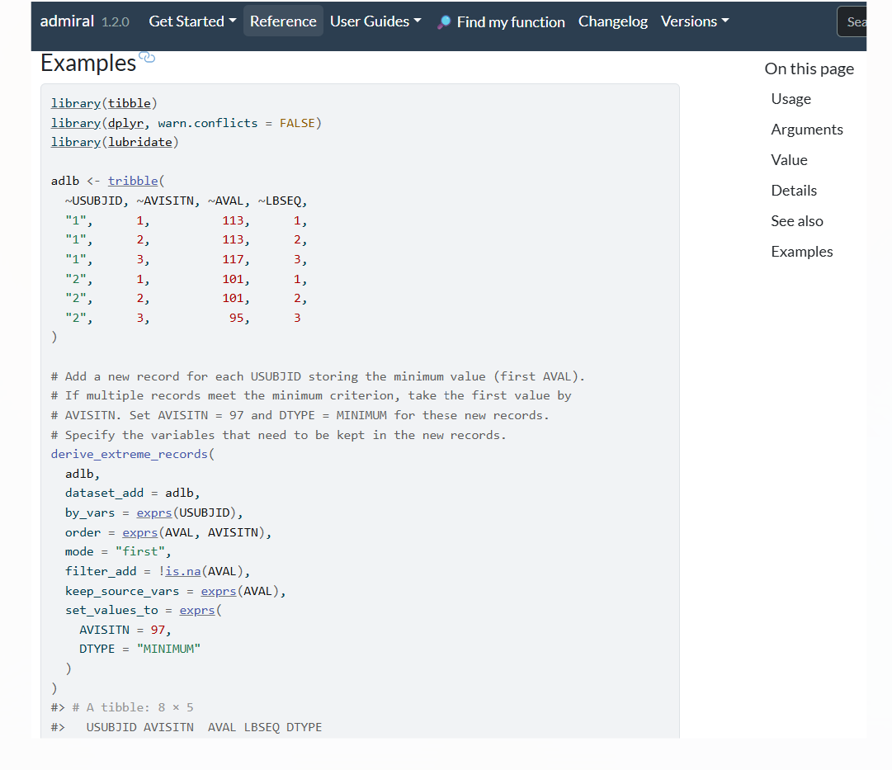
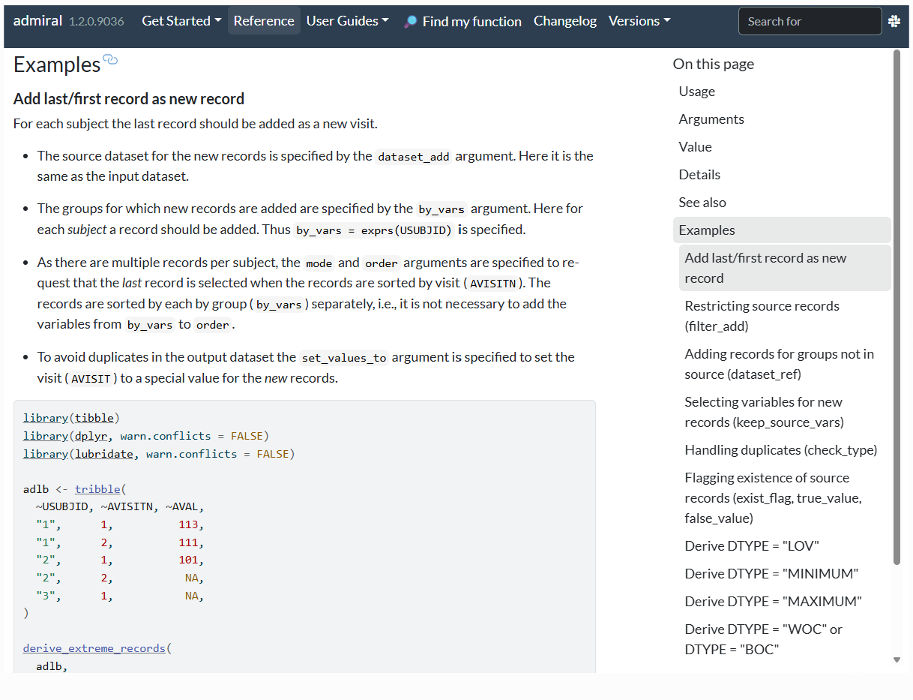

{admiral} 1.3 is here - say hello to supercharged examples, bug fixes and more!
ADaM
Authors
Ben Straub
Edoardo Mancini
Published
June 26, 2025

The second half of 2025 brings us once again to an exciting admiral {admiral} release! Read through this blog post to learn more what is available in admiral {admiral} 1.3.
Headline update: documentation that gets you
Our crowning update this release cycle is…
Documentation updates!
Hmmm, doesn’t sound fancy enough? What about…
Documentation updates!!
Still not that interesting? Well, let us change your mind with an example. Here’s what the examples section of the reference page for derive_extreme_records() looked like in admiral {admiral} 1.2:

And here’s what it looks like in admiral {admiral} 1.3:

That’s right! Some of our reference examples have now been enhanced such that:
Each example has a title, which is also shown in the table of contents, and a description explaining what is happening.
The examples are often building up in complexity, starting from a simple application of the function in a toy case and building up to more structured use-cases.
The examples for this function now cover all the arguments of the function.
As usual, you can access these reference examples from our documentation website or alternatively directly from RStudio’s own Help pane by typing ?function_name in the console.
For this first iteration, we have targeted some of the most complex, flexible and important functions within admiral {admiral}. The functions which have received this enhanced example treatment are:
This is not to say that the other functions do not have examples anymore; rather, they retain the previous material.
Now, our aim as a development team is to continually enhance the reference examples of our large portfolio of functions regularly across release cycles. If you’d like to play a part, this is also a great opportunity to contribute to admiral {admiral} yourself - please get in touch with our development team through Slack or our Github repo and we’d be happy to help you get started.
We’ve also made various other small documentation enhancements, which you can peruse in the Changelog.
New Function
But we haven’t stopped there! Here’s what else is new in admiral {admiral} 1.3:
We’ve enhanced our catalog of functions with a new addition: derive_vars_joined_summary(). This function is similar to derive_vars_joined(), but allows the derivation of summary variables (e.g. cumulative sum, etc) rather than variables using a formula. For instance, here’s an example derivation in ADAE of CUMDOSA, the cumulative dose received up until an adverse event:
We now provide new lab grading metadata specifically tailored for US (Conventional) units across three grading criteria: NCI-CTCAEv4 (atoxgr_criteria_ctcv4_uscv), NCI-CTCAEv5 (atoxgr_criteria_ctcv5_uscv), and DAIDs (atoxgr_criteria_daids_uscv).
Default values for function arguments are now always displayed in argument descriptions.
Breaking Changes
Excluding deprecations, we have only two small breaking changes:
We’ve renamed SI_UNIT_CHECK to UNIT_CHECK in lab grading metadata variables: atoxgr_criteria_ctcv4(), atoxgr_criteria_ctcv5(), and atoxgr_criteria_daids() to simplify specifications.
The values of the variable specified for tmp_obs_nr_var in derive_vars_joined(), derive_var_joined_exist_flag() and filter_joined() are now populated differently if there are multiple records in dataset or dataset_add for the same values of by_vars and order. Before each of these records was assigned a different value, i.e., the variable (together with by_vars) was a unique identifier. Now the value is the same for all these records.
We’ve also started pre-alerting users of an upcoming breaking change to the default behavior of derive_vars_dtm() in our next release (1.4.0), where we’ll switch the default value of ignore_seconds_flag from FALSE to TRUE. Ahead of this change, derive_vars_dtm() now issues a helpful message informing users of the upcoming change, to allowing mitigation ahead of time.
Updates of existing functions and bug fixes
We’ve also been busy updating some of our existing functions in response to bug fixes and requests for enhancements. One particular update of note was to derive_locf_records, which now comes with two new arguments id_vars_ref and imputation. The id_vars_ref argument allows users to select the variables to group by in the reference dataset when determining which observations to add to the input dataset. The imputation argument lets users decide whether to update analysis_var when its value is NA (“update” and “update_add”), or to add a new observation instead (“add”).
You can find the full list of updates in the Changelog.
Conclusion
We’ve been truly thrilled with the amount of user feedback and engagement with the package in the last six months, which is a big reason for the amount of content in this new release. As such, we’re super excited to finally make admiral {admiral} 1.3 available to the pharmaverse community, and look forward to continuing to co-create admiral {admiral} together!